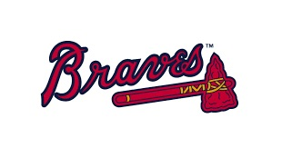
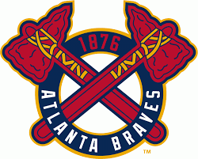
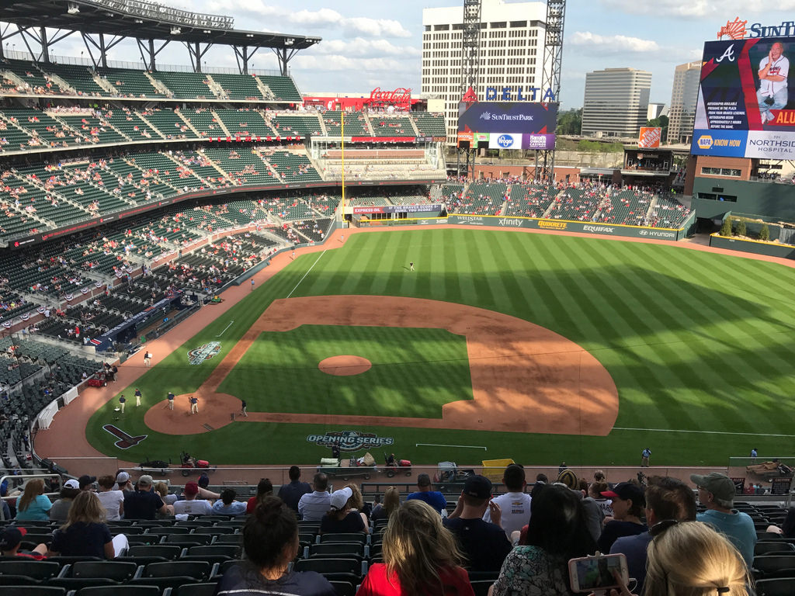
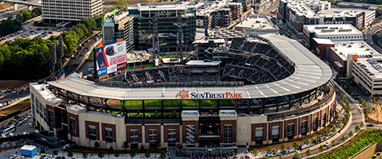

|  | |
 |
Atlanta has only lost two games so far this season:
The Braves have won every other Game!
For access to their full schedule, click here.
|  |  |
SunTrust Park, the home of the Atlanta Braves is the first of its kind -- a destination that simultaneously builds and integrates a state-of-the-art Major League Baseball ballpark with the ever-growing and developing Atlanta community.
SunTrust Park is the perfect marriage of classic ballpark feel, modern amenities and southern hospitality, which creates a fan experience unlike any other. An intimate setting of 41,000 seats is designed to maximize sightlines, making every seat feel like the "best in the house".
The Braves’ .450 average with runners in scoring position is the best in the majors, nearly 100 points higher than the next-best (Rockies, .353). Freddie Freeman is the majors’ individual leader in average (.857), OBP (.889) and slugging percentage (1.857) with runners in scoring position. Freeman is 6-for-7 with two homers, two intentional walks and nine RBIs with RISP. As a team, the Braves also lead by wide margins in OBP (.507) and slugging (.750) with RISP, and are tied with the Astros for most RISP at-bats per game (10). The Braves’ five homers with runners in scoring position is also tied for most in the majors. Go Braves!
The rankings are as follows:
The Braves led at the end of all 18 innings in the final two games of their series against the Nationals on Tuesday and Wednesday. Washington had not trailed in any of 36 innings during its 4-0 start before losing the last two games of the series at SunTrust Park. The Braves scored seven or more runs in four of its first six games, including games with 15 runs vs. the Phillies and 13 runs vs. the Nationals. In 2017 the Braves didn’t score more than five runs until their 11th game and didn’t do it a second time until their 19th game.
| Submit* |